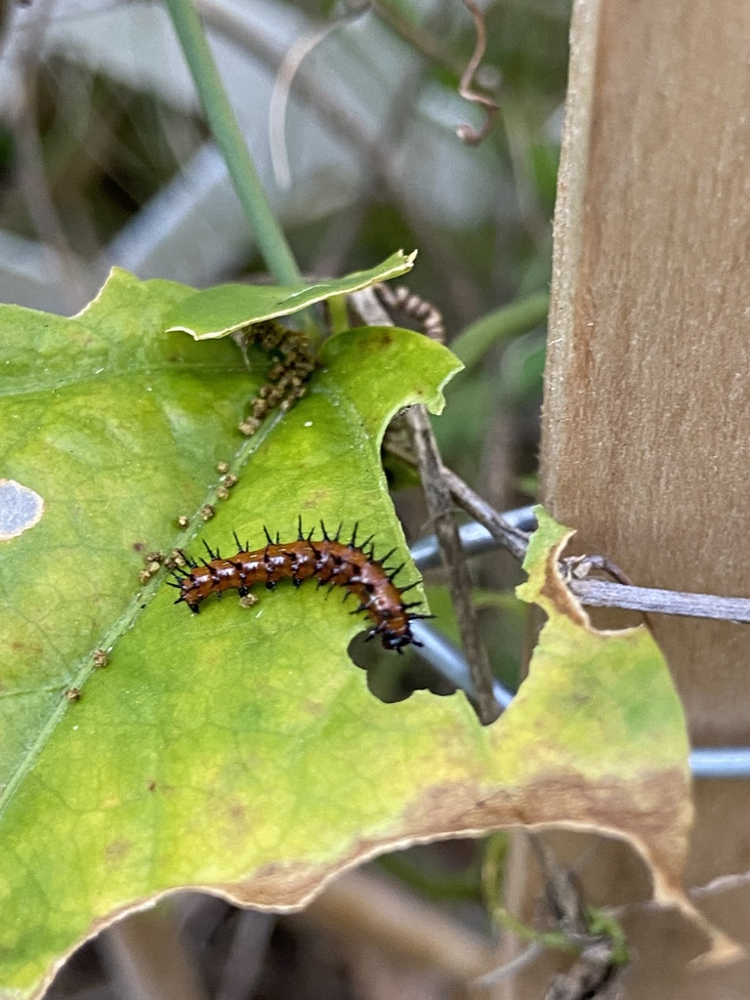

- The gulf fritillary is a bright orange butterfly with black markings above and an underside scattered with brilliant, mirror-like silver spots.
- Like the zebra longwing, it depends entirely on passionflower vines — the two butterflies share the same host plant.
- Its caterpillars are showy too: bright orange with rows of soft-looking black spines that look fierce but do not sting.
- In late summer and fall, large numbers move south into the Florida peninsula, a seasonal drift that brings them into gardens in good numbers.
Bright orange with black spots and markings.
Brown with elongated, iridescent silver-white spots.
Somewhat long-winged, like its longwing relatives.
Silent, like all butterflies.
A bright orange butterfly nectaring in the open; when it closes its wings, look for the unmistakable rows of shiny silver spots underneath. The caterpillar is orange with branching black spines, found on passionflower vines.
Caterpillars feed only on passionflower (Passiflora) vines. Adults nectar at many flowers, including lantana, Spanish needles, and other open blooms.
In sunny, flowery spots, nectaring with wings closed to show the silver underside. Check passionflower vines for the spiny orange caterpillars. Most numerous in late summer and fall.
Year-round resident, most numerous during the fall southward movement into Florida.
Just watch and enjoy. Native passionflower vine supports both the gulf fritillary and the zebra longwing, making it a standout butterfly plant.

- © Pammy63 (CC-BY-NC), via iNaturalist
- © Harrison Mello (CC-BY-NC), via iNaturalist